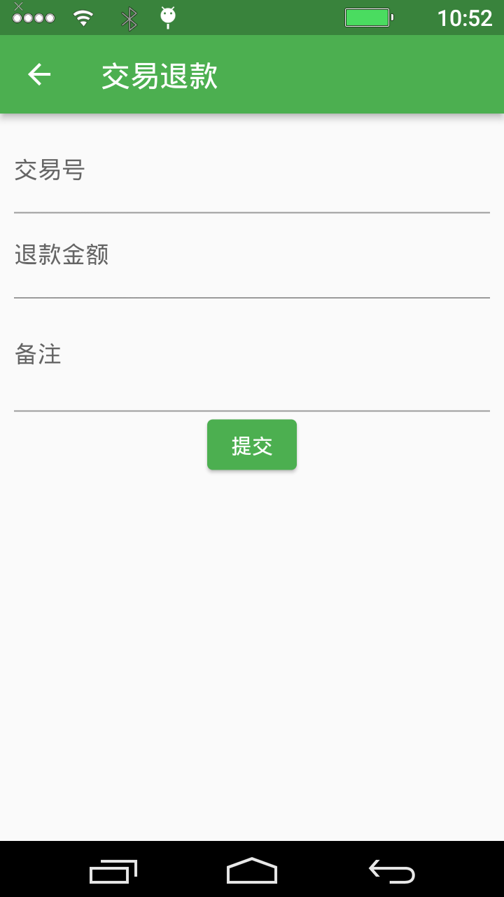
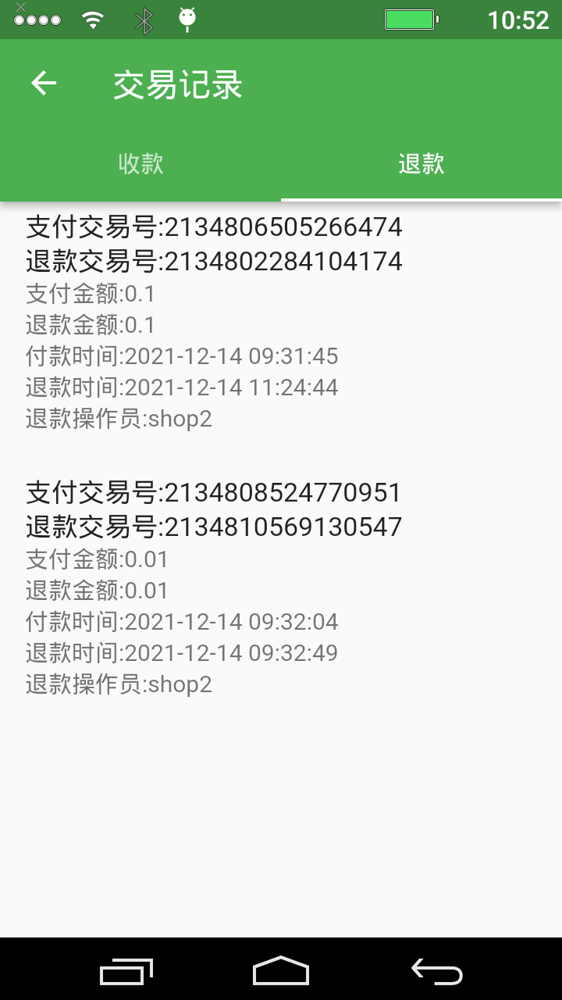
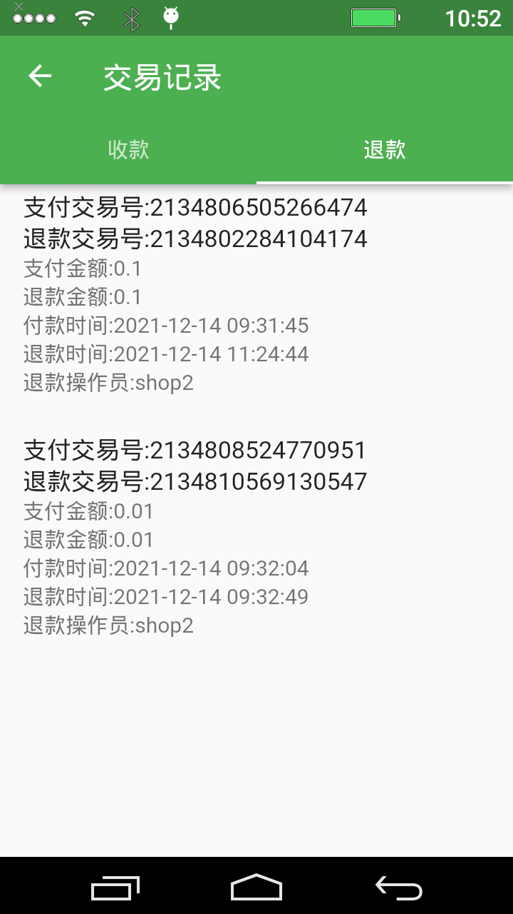

商家POS收款功能使用指南
商家POS收款功能，允许景区内的合作商户通过手持POS机直接向游客收款，特别适用于租赁、餐饮、零售等需要现场付费的场景。本文档将指导您完成后台配置和设备端操作的全过程。
警告： 在使用本功能前，请务必完整阅读并理解本文档中的后台配置部分，不正确的配置将导致设备无法使用或账目错误。
第一部分：后台配置
在使用POS机收款前，必须先在后台创建商户和对应的操作员账号。
1. 商户管理
在后台左侧导航菜单中找到 商户收款 -> 商户管理，进入商户管理页面。所有商户的查询、创建、修改、启/停用等操作均在此页面进行。

新建商户： 点击“新建”按钮，在弹窗中填写商户信息并提交。
**注意：** “商户号”在系统中必须唯一，且一旦创建便不可修改。
编辑商户： 点击列表中的“修改”按钮，可以更新商户的名称、Logo、介绍以及启/停用状态。

2. 操作员管理
商户必须关联至少一个操作员账号才能在POS机上登录使用。
操作员创建前提：
- 必须先为商家操作员创建专用的角色。创建角色的步骤参见 后台操作说明书。
- 创建的商家操作员角色，其“角色编号”必须以
9900开头，否则无效。
创建操作员： 在“操作员管理”页面点击“新建”，录入账号、密码、姓名，并为其指定正确的角色和归属商户。

修改操作员： 可修改操作员的基本信息。如需重置密码，请使用“修改密码”功能。

3. 账务管理
收款记录： 可查看和导出所有通过POS机完成的收款明细，此记录不可修改。

退款记录： 可在后台或手持机上发起退款。在后台退款需在此页面点击“新建”，输入原交易单号和退款金额。
**退款限制：** 退款金额不能大于原订单金额，且通常只支持对当天的交易发起退款。结算记录： 系统每日凌晨会自动生成前一天的交易结算单。财务人员核对无误后，可在此页面进行“确认”操作。

第二部分：手持POS机操作
1. 安装与首次配置
安装App：
目前App主要适配了 **N86、P1000、P2000** 等型号的手持机。在未适配的设备上可能无法正常使用。App安装包请联系我方工作人员获取。设置服务器地址：
- 打开App，在登录页面点击右上角的齿轮图标。
- 在弹出的对话框中，输入您的后台服务器URL地址（注意末尾不要带
/）。
2. 日常操作
使用在后台创建的操作员账号密码登录POS机。

登录后主界面如下，包含收款、退款、记录查询等核心功能。

收款： 在“收款”页面输入金额，点击确定后会生成聚合支付二维码供顾客扫码支付。

退款： 在“退款”页面通常需要输入或扫描原始订单的凭证号来发起退款流程。 
记录查询： 可在设备上直接查看本地的“收款记录”和“退款记录”。
 
统计： 查看本机当日的销售统计汇总数据。

设置： 提供一些本地化设置，如打印机参数、声音提醒等。